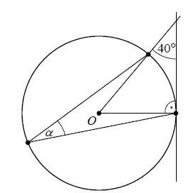

Matura 2013 czerwiec
Liczba \(\left (\sqrt[3]{16}\cdot 4^{-2} \right)^3\) jest równa
A.\( 4^4 \)
B.\( 4^{-4} \)
C.\( 4^{-8} \)
D.\( 4^{-12} \)
B
Dodatnia liczba \(x\) stanowi \(70\%\) liczby \(y\). Wówczas
A.\( y=\frac{13}{10}x \)
B.\( y=\frac{7}{10}x \)
C.\( y=\frac{10}{7}x \)
D.\( y=\frac{10}{13}x \)
C
Przedział \(\langle -1,3 \rangle\) jest opisany nierównością
A.\( |x+1|\ge 2 \)
B.\( |x+1|\le 2 \)
C.\( |x-1|\le 2 \)
D.\( |x-1|\ge 2 \)
C
Wartość wyrażenia \(\log_2{20}-\log_2{5}\) jest równa
A.\( \log_2{15} \)
B.\( 2 \)
C.\( 4 \)
D.\( \log_2{25} \)
B
Liczba \((-3)\) jest miejscem zerowym funkcji \(f(x)=(2m-1)x+9\). Wtedy
A.\( m=-2 \)
B.\( m=0 \)
C.\( m=2 \)
D.\( m=3 \)
C
Dla każdego kąta ostrego \(\alpha \) wyrażenie \(\sin^{2}
\alpha +\sin^{2} \alpha \cdot \cos^{2}\alpha + \cos^{4}\alpha\) jest równe
A.\( 2\sin^{2} \alpha \)
B.\( 2\cos^{2}\alpha \)
C.\( 1 \)
D.\( 2 \)
C
Kąt \(\alpha \) jest ostry i \(\sin \alpha =\frac{1}{3}\). Wartość wyrażenia \(1+\operatorname{tg} \alpha \cdot \cos \alpha \) jest równa
A.\( \frac{4}{3} \)
B.\( \frac{11}{9} \)
C.\( \frac{17}{9} \)
D.\( \frac{11}{3} \)
A
Zbiorem wartości funkcji \(f\) jest przedział 
A.\( \langle -3,5 \rangle \)
B.\( \langle -6,7 \rangle \)
C.\( \langle 0,6 \rangle \)
D.\( \langle -5,8 \rangle \)
A
Przedziałem, w którym funkcja \(f\) przyjmuje tylko wartości ujemne, jest
A.\( \langle 5,0 \rangle \)
B.\( ( 5,7 \rangle \)
C.\( \langle 0,7 \rangle \)
D.\( \langle -6,5 \rangle \)
B
Funkcja \(g\) jest określona wzorem 
A.\( g(x)=f(x-1) \)
B.\( g(x)=f(x)-1 \)
C.\( g(x)=f(x+1) \)
D.\( g(x)=f(x)+1 \)
B
Punkt \(O\) jest środkiem okręgu. Kąt \(\alpha\), zaznaczony na rysunku, ma miarę

A.\( 50^\circ \)
B.\( 45^\circ \)
C.\( 25^\circ \)
D.\( 20^\circ \)
C
Iloczyn wielomianów \(2x-3\) oraz \(-4x^2-6x-9\) jest równy
A.\( -8x^3+27 \)
B.\( -8x^3-27 \)
C.\( 8x^3+27 \)
D.\( 8x^3-27 \)
A
Prostokąt \(ABCD\) o przekątnej długości \(2\sqrt{13}\) jest podobny do prostokąta
o bokach długości \(2\) i \(3\). Obwód prostokąta \(ABCD\) jest równy
A.\( 10 \)
B.\( 20 \)
C.\( 5 \)
D.\( 24 \)
B
Kosinus kąta ostrego rombu jest równy \(\frac{\sqrt{3}}{2}\), bok rombu ma długość
\(3\). Pole tego rombu jest równe
A.\( \frac{9}{2} \)
B.\( \frac{9\sqrt{3}}{4} \)
C.\( \frac{9\sqrt{3}}{2} \)
D.\( 6 \)
A
Pole powierzchni całkowitej sześcianu jest równe \(12\). Suma długości wszystkich
krawędzi tego sześcianu jest równa
A.\( 12\sqrt{2} \)
B.\( 8\sqrt{2} \)
C.\( 6\sqrt{2} \)
D.\( 3\sqrt{2} \)
A
Ciąg \(\left ( {a}_{n} \right )\) określony jest wzorem \({a}_{n}=-2+\frac{12}{n}\) dla \(n \ge 1 \). Równość \( {a}_{n}=4 \) zachodzi dla
A.\( n=2 \)
B.\( n=3 \)
C.\( n=4 \)
D.\( n=5 \)
A
Funkcja \(f(x)=3x(x^2+5)(2-x)(x+1)\) ma dokładnie
A.dwa miejsca zerowe.
B.trzy miejsca zerowe.
C.cztery miejsca zerowe.
D.pięć miejsc zerowych.
B
Wskaż równanie prostej, której fragment przedstawiony jest na poniższym wykresie
A.\( x-2y-4=0 \)
B.\( x+2y+4=0 \)
C.\( x-2y+4=0 \)
D.\( x+2y-4=0 \)
D
Przyprostokątne w trójkącie prostokątnym mają długości \(1\) oraz \(\sqrt{3}\).
Najmniejszy kąt w tym trójkącie ma miarę
A.\( 60^\circ \)
B.\( 30^\circ \)
C.\( 45^\circ \)
D.\( 15^\circ \)
B
Dany jest ciąg arytmetyczny \((a_n)\) w którym różnica \(r=-2\) oraz \(a_{20 }=17\). Wówczas
pierwszy wyraz tego ciągu jest równy
A.\( 45 \)
B.\( 50 \)
C.\( 55 \)
D.\( 60 \)
C
W ciągu geometrycznym \((a_n)\) pierwszy wyraz jest równy \(\frac{9}{8}\), a
czwarty wyraz jest równy \(\frac{1}{3}\). Wówczas iloraz \(q\) tego ciągu jest równy
A.\( q=\frac{1}{3} \)
B.\( q=\frac{1}{2} \)
C.\( q=\frac{2}{3} \)
D.\( q=\frac{3}{2} \)
C
Wyniki sprawdzianu z matematyki są przedstawione na poniższym diagramie.  Średnia ocen uzyskanych przez
uczniów z tego sprawdzianu jest równa
Średnia ocen uzyskanych przez
uczniów z tego sprawdzianu jest równa
Średnia ocen uzyskanych przez
uczniów z tego sprawdzianu jest równa A.\( 2 \)
B.\( 3 \)
C.\( 3{,}5 \)
D.\( 4 \)
C
Objętość stożka o wysokości \(h\) i promieniu podstawy trzy razy mniejszym od
wysokości jest równa
A.\( \frac{1}{9}\pi h^2 \)
B.\( \frac{1}{27}\pi h^2 \)
C.\( \frac{1}{9}\pi h^3 \)
D.\( \frac{1}{27}\pi h^3 \)
D
Rzucamy trzykrotnie symetryczną monetą. Prawdopodobieństwo, że w trzecim rzucie
wypadnie orzeł jest równe
A.\( \frac{1}{4} \)
B.\( \frac{3}{8} \)
C.\( \frac{1}{2} \)
D.\( \frac{3}{4} \)
C
Dana jest prosta \(l\) o równaniu \(y=-\frac{2}{5}x\).
Prosta \(k\) równoległa do prostej \(l\) i przecinająca oś \(Oy\) w punkcie o współrzędnych
\((0,3)\) ma równanie
A.\( y=-0{,}4x+3 \)
B.\( y=-0{,}4x-3 \)
C.\( y=2{,}5x+3 \)
D.\( y=2{,}5x-3 \)
A
Liczba \(\log4+\log5-\log2\) jest równa
A.\( 10 \)
B.\( 2 \)
C.\( 1 \)
D.\( 0 \)
C
Rozwiąż równanie \(3x^3-4x^2-3x+4=0\).
\(x=-1\) lub \(x=1\) lub \(x=\frac{4}{3}\)
Kąt \(\alpha\) jest ostry i \(\cos\alpha =
\frac{\sqrt{7}}{4}\). Oblicz wartość wyrażenia \(2+\sin^3\!\alpha
+\sin\alpha \cdot \cos^2\!\alpha\).
\(2\frac{3}{4}\)
Oblicz, ile jest liczb naturalnych czterocyfrowych, w których cyfra jedności jest o
\(3\) większa od cyfry setek.
\(630\)
Wykaż, że liczba \((1+2013^2)(1+2013^4)\) jest dzielnikiem liczby:
\(1+2013+2013^2+2013^3+2013^4+2013^5+2013^6+2013^7\).
\(1+2013+2013^2+2013^3+2013^4+2013^5+2013^6+2013^7\).
Nieskończony ciąg geometryczny \((a_n)\) jest określony wzorem \(a_n=7\cdot 3^{n+1}\), dla \(n\ge 1\). Oblicz iloraz \(q\) tego ciągu.
\(q=3\)
Podstawą graniastosłupa \(ABCDEFGH\) jest prostokąt \(ABCD\) (zobacz rysunek),
którego krótszy bok ma długość \(3\). Przekątna prostokąta \(ABCD\) tworzy z jego dłuższym bokiem
kąt \(30^\circ\). Przekątna \(HB\) graniastosłupa tworzy z płaszczyzną jego podstawy kąt
\(60^\circ\). Oblicz objętość tego graniastosłupa. 
\(V=162\)
Grupa znajomych wykupiła wspólnie dostęp do Internetu na okres jednego roku. Opłata
miesięczna wynosiła \(120\) złotych. Podzielono tę kwotę na równe części, by każdy ze znajomych
płacił tyle samo. Po upływie miesiąca do grupy dołączyły jeszcze dwie osoby i wówczas opłata
miesięczna przypadająca na każdego użytkownika zmniejszyła się o \(5\) złotych. Ile osób liczyła ta
grupa w pierwszym miesiącu użytkowania Internetu?
\(6\)
Wierzchołki trapezu \(ABCD\) mają współrzędne:
\(A=(-1,-5)\), \(B=(5, 1)\), \(C=(1, 3)\), \(D=(-2, 0)\). Napisz równanie okręgu, który jest styczny
do podstawy \(AB\) tego trapezu, a jego środek jest punktem przecięcia się
prostych zawierających ramiona \(AD\) oraz \(BC\)
trapezu \(ABCD\).
\((x+3)^2+(y-5)^2=72\)